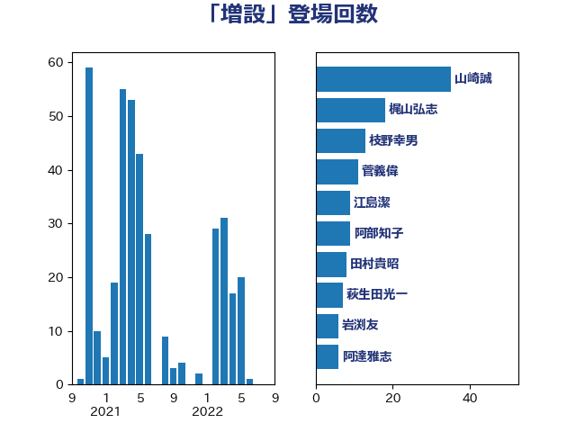

単語「増設」

| 山崎誠 | 立憲民主党 | 35 回 |
| 梶山弘志 | 自由民主党 | 18 回 |
| 枝野幸男 | 立憲民主党 | 13 回 |
| 菅義偉 | 自由民主党 | 11 回 |
| 江島潔 | 自由民主党 | 9 回 |
| 阿部知子 | 立憲民主党 | 9 回 |
| 田村貴昭 | 日本共産党 | 8 回 |
| 萩生田光一 | 自由民主党 | 7 回 |
| 岩渕友 | 日本共産党 | 6 回 |
| 阿達雅志 | 自由民主党 | 6 回 |
| 塩川鉄也 | 日本共産党 | 5 回 |
| 山下芳生 | 日本共産党 | 5 回 |
| 笠井亮 | 日本共産党 | 5 回 |
| 坂本哲志 | 自由民主党 | 4 回 |
| 岸真紀子 | 立憲民主党 | 4 回 |
| 徳永エリ | 立憲民主党 | 4 回 |
| 梅村みずほ | 日本維新の会 | 4 回 |
| 赤羽一嘉 | 公明党 | 4 回 |
| 井上信治 | 自由民主党 | 3 回 |
| 宮本岳志 | 日本共産党 | 3 回 |
| 小林茂樹 | 自由民主党 | 3 回 |
| 小泉進次郎 | 自由民主党 | 3 回 |
| 小熊慎司 | 立憲民主党 | 3 回 |
| 牧山ひろえ | 立憲民主党 | 3 回 |
| 中川貴元 | 自由民主党 | 2 回 |
| 北村経夫 | 自由民主党 | 2 回 |
| 城井崇 | 立憲民主党 | 2 回 |
| 大岡敏孝 | 自由民主党 | 2 回 |
| 大島敦 | 立憲民主党 | 2 回 |
| 山岡達丸 | 立憲民主党 | 2 回 |
| 山添拓 | 日本共産党 | 2 回 |
| 志位和夫 | 日本共産党 | 2 回 |
| 木村英子 | れいわ新選組 | 2 回 |
| 梅村聡 | 日本維新の会 | 2 回 |
| 浜口誠 | 国民民主党 | 2 回 |
| 清水真人 | 自由民主党 | 2 回 |
| 福山哲郎 | 立憲民主党 | 2 回 |
| 稲田朋美 | 自由民主党 | 2 回 |
| 足立敏之 | 自由民主党 | 2 回 |
| 金子恭之 | 自由民主党 | 2 回 |
| 青木愛 | 立憲民主党 | 2 回 |
| おおつき紅葉 | 立憲民主党 | 1 回 |
| ながえ孝子 | 無所属 | 1 回 |
| 上田清司 | 国民民主党 | 1 回 |
| 丸川珠代 | 自由民主党 | 1 回 |
| 亀岡偉民 | 自由民主党 | 1 回 |
| 伊藤俊輔 | 立憲民主党 | 1 回 |
| 倉林明子 | 日本共産党 | 1 回 |
| 冨樫博之 | 自由民主党 | 1 回 |
| 務台俊介 | 自由民主党 | 1 回 |
| 宗清皇一 | 自由民主党 | 1 回 |
| 宮本徹 | 日本共産党 | 1 回 |
| 小野泰輔 | 日本維新の会 | 1 回 |
| 岡本三成 | 公明党 | 1 回 |
| 岡田克也 | 立憲民主党 | 1 回 |
| 平木大作 | 公明党 | 1 回 |
| 平林晃 | 公明党 | 1 回 |
| 平沢勝栄 | 自由民主党 | 1 回 |
| 後藤茂之 | 自由民主党 | 1 回 |
| 斉藤鉄夫 | 公明党 | 1 回 |
| 新妻秀規 | 公明党 | 1 回 |
| 森屋隆 | 立憲民主党 | 1 回 |
| 横山信一 | 公明党 | 1 回 |
| 浅野哲 | 国民民主党 | 1 回 |
| 滝波宏文 | 自由民主党 | 1 回 |
| 片山大介 | 日本維新の会 | 1 回 |
| 猪口邦子 | 自由民主党 | 1 回 |
| 玉木雄一郎 | 国民民主党 | 1 回 |
| 田村憲久 | 自由民主党 | 1 回 |
| 石井章 | 日本維新の会 | 1 回 |
| 石井苗子 | 日本維新の会 | 1 回 |
| 石垣のりこ | 立憲民主党 | 1 回 |
| 秋本真利 | 自由民主党 | 1 回 |
| 竹内真二 | 公明党 | 1 回 |
| 篠原豪 | 立憲民主党 | 1 回 |
| 美延映夫 | 日本維新の会 | 1 回 |
| 西銘恒三郎 | 自由民主党 | 1 回 |
| 赤嶺政賢 | 日本共産党 | 1 回 |
| 里見隆治 | 公明党 | 1 回 |
| 金城泰邦 | 公明党 | 1 回 |
| 金子恵美 | 立憲民主党 | 1 回 |
| 関芳弘 | 自由民主党 | 1 回 |
| 高橋はるみ | 自由民主党 | 1 回 |
| 高見康裕 | 自由民主党 | 1 回 |